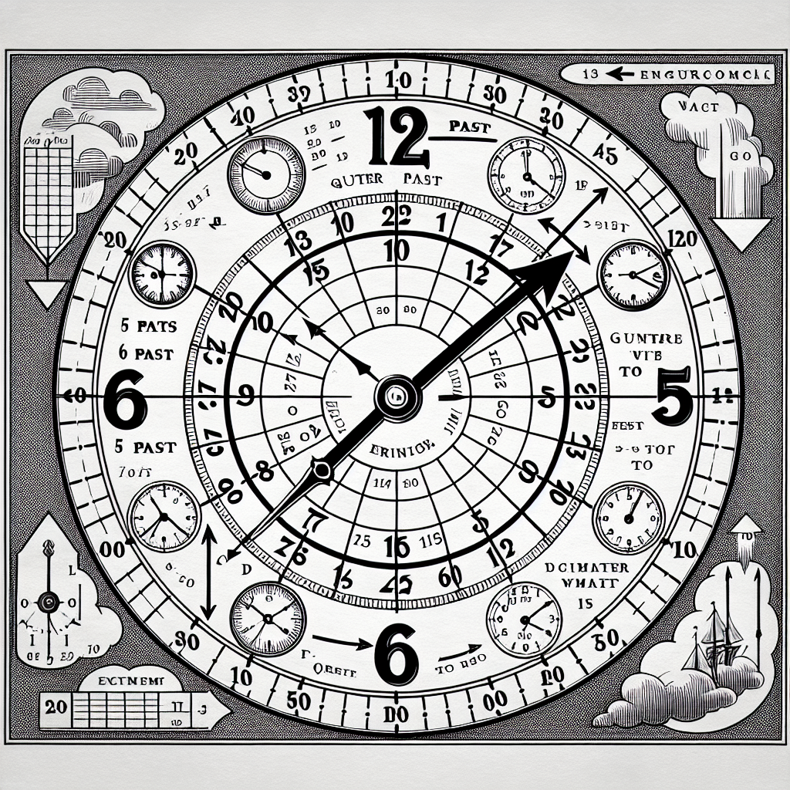
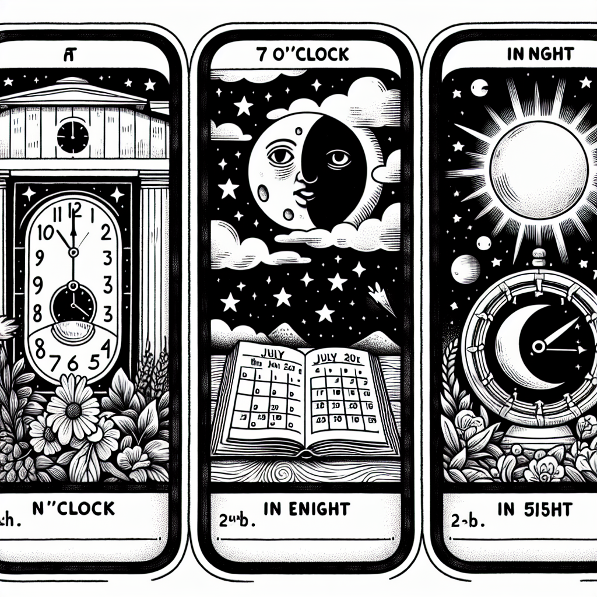
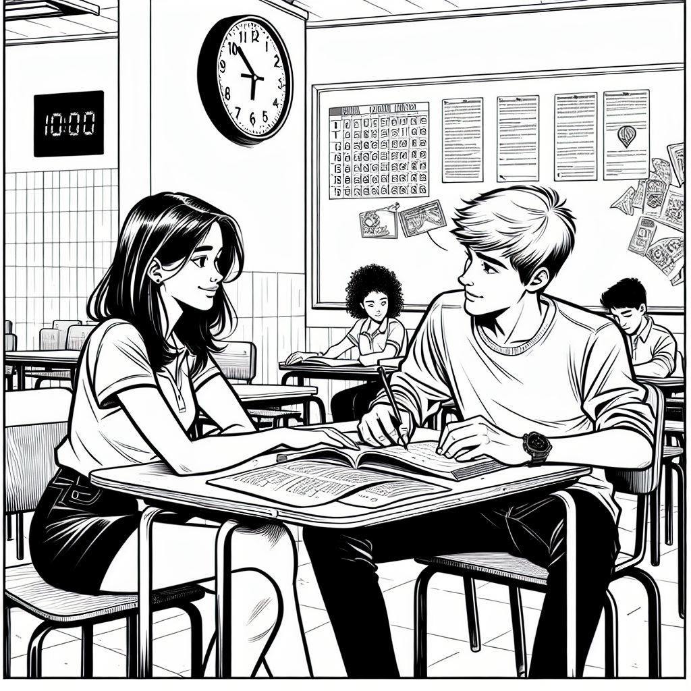
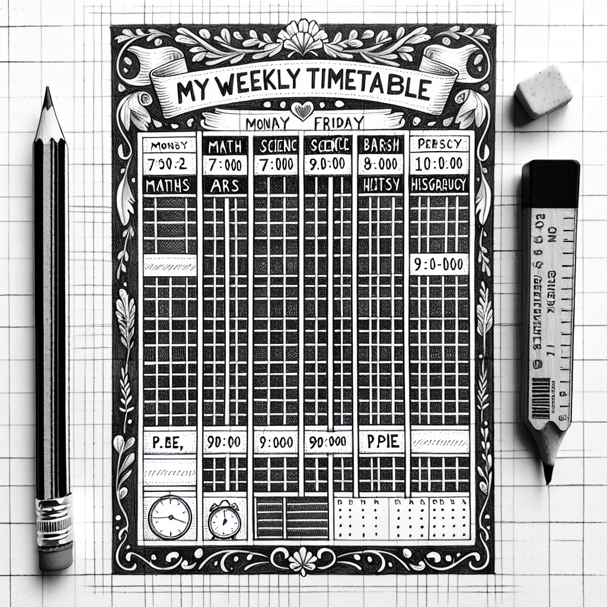

Time & Time Prepositions
In this chapter you will learn how to tell the time in English and how to use the prepositions at, in, and on with time expressions. You will also learn other useful time expressions such as from...to, before/after, and during. By the end, you will be able to talk about schedules, timetables, and your weekly routine with confidence.
Telling the Time
In English we say "It's..." to tell the time. Here are the main patterns:
| Time | English | Português |
|---|---|---|
| 3:00 | It's three o'clock. | São três horas. |
| 3:15 | It's quarter past three. | São três e quinze. |
| 3:30 | It's half past three. | São três e meia. |
| 3:45 | It's quarter to four. | São quinze para as quatro. |
Key idea: For times after the half hour (31–59 minutes), English often counts backwards to the next hour using "to".
For other times, use "past" (1–30 minutes after the hour) or "to" (1–29 minutes before the next hour).
| Time | English | Português |
|---|---|---|
| 5:05 | It's five past five. | São cinco e cinco. |
| 5:10 | It's ten past five. | São cinco e dez. |
| 5:20 | It's twenty past five. | São cinco e vinte. |
| 5:40 | It's twenty to six. | São vinte para as seis. |
| 5:50 | It's ten to six. | São dez para as seis. |
| 5:55 | It's five to six. | São cinco para as seis. |
You can also say the time in digital style — just read the numbers directly. This is very common in everyday speech.
| Time | Traditional | Digital Style |
|---|---|---|
| 7:15 | quarter past seven | seven fifteen |
| 9:30 | half past nine | nine thirty |
| 3:45 | quarter to four | three forty-five |
| 11:05 | five past eleven | eleven oh five |
AM and PM:
- AM = from midnight (00:00) to midday (11:59) — ante meridiem
- PM = from midday (12:00) to midnight (23:59) — post meridiem
| English | Meaning | Português |
|---|---|---|
| 7:00 AM | seven in the morning | 7 da manhã |
| 12:00 PM | noon / midday | meio-dia |
| 3:00 PM | three in the afternoon | 3 da tarde |
| 9:00 PM | nine in the evening | 9 da noite |
| 12:00 AM | midnight | meia-noite |

Examples in Context
School starts at eight o'clock.
A escola começa às oito horas.
I have lunch at half past twelve.
Eu almoço ao meio-dia e meia.
The bus arrives at quarter to eight.
O ônibus chega às quinze para as oito.
The film starts at seven forty-five PM.
O filme começa às sete e quarenta e cinco da noite.
We eat lunch at noon and the party ends at midnight.
Nós almoçamos ao meio-dia e a festa termina à meia-noite.
Common mistakes when telling the time:
- Wrong word order: "It's past ten five" → "It's five past ten"
- Using "and" like Portuguese: "three and thirty" → "three thirty" or "half past three"
- Forgetting "oh" for single digits: "It's seven five" → "It's seven oh five" (7:05)
Suggested time: 25 minutes
Warm-up: Draw a large clock on the board. Move the hands and ask "What time is it?" Students call out the answer. Start with o'clock, then half past, then quarter past/to, then other minutes.
L1 interference: In Portuguese, times after :30 are often expressed as "X e Y" (e.g. "três e quarenta e cinco"), whereas English uses "to" (quarter to four). Spend extra time on the "to" pattern.
Write each time in words using the traditional style (o'clock, past, to, quarter, half).
Match each digital time (1–6) with the correct way to say it (a–f).
1. 3:45
2. 6:30
3. 11:15
4. 8:05
5. 1:40
6. 12:00 AM
a) five past eight
b) quarter to four
c) midnight
d) half past six
e) twenty to two
f) quarter past eleven
Time Prepositions — at, in, on

Use "at" with specific times of the clock and some fixed expressions.
| Use AT with | Examples | Português |
|---|---|---|
| Clock times | at 7 o'clock, at 3:30, at half past nine | às 7 horas, às 3:30, às nove e meia |
| Noon / Midnight | at noon, at midnight | ao meio-dia, à meia-noite |
| Night | at night | à noite |
| Mealtimes | at lunchtime, at dinnertime | na hora do almoço, na hora do jantar |
| The weekend | at the weekend (British English) | no fim de semana |
Use "in" with longer periods of time.
| Use IN with | Examples | Português |
|---|---|---|
| Parts of the day | in the morning, in the afternoon, in the evening | de manhã, de tarde, de noite (início) |
| Months | in January, in July, in December | em janeiro, em julho, em dezembro |
| Seasons | in (the) summer, in (the) winter | no verão, no inverno |
| Years | in 2025, in 1998 | em 2025, em 1998 |
| Centuries / Decades | in the 21st century, in the 1990s | no século XXI, nos anos 90 |
Use "on" with specific days and dates.
| Use ON with | Examples | Português |
|---|---|---|
| Days of the week | on Monday, on Friday, on Saturdays | na segunda-feira, na sexta, aos sábados |
| Specific dates | on the 5th of March, on 15th July | no dia 5 de março, no dia 15 de julho |
| Special days | on Christmas Day, on my birthday, on New Year's Day | no dia de Natal, no meu aniversário, no Ano Novo |
| Day + part of day | on Monday morning, on Friday evening | na segunda de manhã, na sexta à noite |
"at night" NOT "in the night"! This is a very common mistake. We say "in the morning", "in the afternoon", "in the evening", but "at night".
Also: when we combine a day with a part of the day, we use "on": "on Monday morning" (NOT "in Monday morning").
Examples in Context
I wake up at seven o'clock every day.
Eu acordo às sete horas todos os dias.
My father works at night.
Meu pai trabalha à noite.
We have English class in the morning.
Nós temos aula de inglês de manhã.
My birthday is in October.
Meu aniversário é em outubro.
We don't have school on Saturdays.
Não temos aula aos sábados.
The test is on the 20th of March.
A prova é no dia 20 de março.
Think of it this way to remember the rule:
- AT = a point in time (a precise moment) — at 3 o'clock, at noon
- IN = inside a period (a longer time) — in the morning, in July
- ON = on a specific day (a date on the calendar) — on Tuesday, on the 1st of May
Suggested time: 25 minutes
Activity: Write "AT", "IN", and "ON" on three large cards. Say time expressions aloud ("Monday", "7 o'clock", "the morning", "July", "my birthday") and have students hold up the correct card.
L1 interference: In Portuguese, "em" is used for many of these — "em segunda", "em julho", "em 2025", "em janeiro". Students tend to overuse "in" because "em" maps to "in" in their minds. Emphasise that days need "on" and clock times need "at".
Complete each sentence with at, in, or on.
Each sentence has a wrong preposition. Rewrite the sentence with the correct preposition.
Other Time Expressions
Besides at/in/on, English has many other useful time expressions.
| Expression | Meaning | Português | Example |
|---|---|---|---|
| from...to | start point to end point | de...até / das...às | I study from 8 to 12. |
| from...until | same as from...to | de...até | She works from Monday until Friday. |
| before | earlier than | antes de | I have breakfast before school. |
| after | later than | depois de | We play football after class. |
| during | throughout a period | durante | Don't talk during the lesson. |
| between...and | from one point to another | entre...e | Lunch is between 12 and 1. |
| by | no later than (deadline) | até (prazo) | Finish your homework by Friday. |
| English | Português | Example Sentence |
|---|---|---|
| from...to | de...até | I work from 9 to 5. |
| until / till | até | Wait until 3 o'clock. |
| before | antes de | Wash your hands before lunch. |
| after | depois de | I do homework after school. |
| during | durante | Be quiet during the exam. |
| between...and | entre...e | The break is between 10 and 10:30. |
| by | até (prazo final) | Submit the project by Monday. |
| ago | atrás | I arrived 10 minutes ago. |
Examples in Context
Classes are from 7:30 to 12:00.
As aulas são das 7:30 às 12:00.
I brush my teeth before bed and after meals.
Eu escovo os dentes antes de dormir e depois das refeições.
We can't use our phones during class.
Não podemos usar o celular durante a aula.
Please finish the exercise by next Wednesday.
Por favor, termine o exercício até a próxima quarta-feira.
"during" vs. "for":
- during = tells you WHEN something happens — "I fell asleep during the film." (during answers "when?")
- for = tells you HOW LONG — "I slept for two hours." (for answers "how long?")
"by" vs. "until":
- by = at any time before the deadline — "Finish by 5 PM." (the task must be done before 5 PM)
- until = continuing up to that time — "I will wait until 5 PM." (I keep waiting from now to 5 PM)
Suggested time: 20 minutes
Activity: Write the school timetable on the board and practise: "Maths is from 7:30 to 8:20", "We have a break between 10 and 10:20", "We must arrive by 7:25".
L1 interference: "durante" in Portuguese maps cleanly to "during" in English, but students sometimes confuse "during" and "for". Use plenty of contrastive examples.
Complete each sentence with from...to, before, after, during, between...and, or by.
Translate the following sentences from Portuguese into English. Pay attention to the time prepositions.
Dialogue & Reading

Dialogue: Talking About Schedules
Suggested time: 10 minutes
Activity: Have students read the dialogue in pairs. Then ask them to underline all the time expressions and identify the preposition used (at, in, on, from...to, between, by, until). Discuss why each preposition is correct.
Read the dialogue above and write T (True) or F (False).
Reading: Camila's Weekly Schedule
My name is Camila and I am 13 years old. I live in São Paulo with my mum and my older brother, Lucas. I am in the 8th grade at a public school near my house.
My alarm goes off at quarter past six every morning. I get up, take a shower, and have breakfast before 7 o'clock. I usually eat bread with cheese and drink a glass of milk. I leave home at ten to seven and walk to school — it only takes five minutes.
Classes start at seven o'clock and finish at noon from Monday to Friday. In the morning I have six classes. My favourite subject is English, and I have it on Tuesdays and Thursdays from 9:50 to 10:40. I also like Art, which I have on Wednesday morning.
The break is between quarter to ten and five past ten. During the break I usually talk to my friends and eat a snack. After school, I go home and have lunch at about half past twelve.
In the afternoon I have different activities on different days. On Mondays and Wednesdays I have English classes at Escola Incluir from 2:00 to 3:30. On Tuesdays I go to the library and study until 4 o'clock. On Thursdays I play volleyball with my friends in the park. On Fridays I don't have any activities — I just relax at home!
In the evening I do my homework before dinner. We usually eat at about half past seven. After dinner I watch a little TV or read a book. I always go to bed by ten o'clock because I need to wake up early.
Suggested time: 20 minutes (reading + exercises 8-9)
Pre-reading: Ask students to describe their own weekly schedule briefly in Portuguese. Then tell them they will read about a student with a similar routine.
Reading strategy: First reading for general understanding, second reading to find specific times and prepositions for the exercises.
Read the text about Camila and answer the questions in complete sentences.
What time does Camila's alarm go off?
Her alarm goes off at quarter past six. / It goes off at 6:15.What time do classes finish?
Classes finish at noon. / They finish at 12 o'clock.On which days does Camila have English at school?
She has English on Tuesdays and Thursdays.What does Camila do during the break?
She talks to her friends and eats a snack.What does Camila do on Thursdays in the afternoon?
She plays volleyball with her friends in the park.What time does Camila go to bed?
She goes to bed by ten o'clock. / She always goes to bed by 10.Complete the sentences about Camila using the correct time preposition (at, in, on, from...to, before, after, during, between...and, by, or until).
Writing & Speaking

Complete the timetable below with your own school subjects and activities. Write the times and the subjects in English.
| Time | Monday | Tuesday | Wednesday | Thursday | Friday |
|---|---|---|---|---|---|
Using the timetable above, write a paragraph (6–8 sentences) describing your weekly schedule. Use the time prepositions you learned in this chapter (at, in, on, from...to, before, after, during, by). You can use Camila's text as a model.
Include:
- What time you wake up and leave home
- What time your classes start and finish
- At least two specific days with activities
- What you do before and after school
- What time you go to bed
Ask a classmate the questions below and write their answers. Then report their schedule to the class using he/she.
What time do you wake up?
What time do your classes start?
What do you have on Wednesdays?
What do you do after school?
What do you do at the weekend?
What time do you go to bed?
Suggested time: 25 minutes (10 for timetable, 15 for writing, 10 for interview)
Assessment criteria for Exercise 11:
- Correct use of at least 4 different time prepositions (at, in, on, from...to, before, after, etc.)
- At least 2 times expressed correctly in words
- Clear paragraph structure (6-8 sentences)
- Accurate description matching the timetable
Exercise 12: After the interview, each student reports to the class: "Ana wakes up at seven. She has classes from 7:30 to 12. On Wednesdays she has English in the morning." This practises third-person forms and reinforces time prepositions in a communicative context.
Chapter 6 - Answer Key
Exercise 1: Write the Time in Words
Exercise 2: Match the Digital Time to the Words
Exercise 3: Choose at, in, or on
Exercise 4: Correct the Mistakes
Exercise 5: Complete with a Time Expression
Exercise 6: Translate into English
Exercise 7: True or False
Exercise 8: Answer the Questions
Exercise 9: Complete About Camila
Exercise 10: Fill In Your Timetable
Answers will vary. Check that students wrote times and subjects in English correctly.
Exercise 11: Write About Your Weekly Schedule
Answers will vary. Check for correct use of at least 4 different time prepositions (at, in, on, from...to, before, after, etc.), at least 2 times expressed correctly in words, clear paragraph structure (6-8 sentences), and accuracy matching the timetable.
Exercise 12: Interview a Classmate
Answers will vary. Check that students answered in complete sentences using time prepositions correctly. When reporting, verify correct use of third-person forms and appropriate time prepositions.